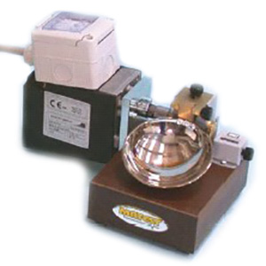
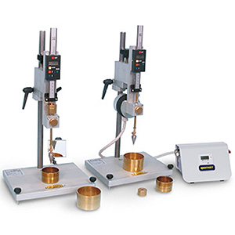
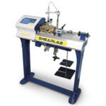
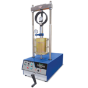
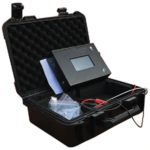
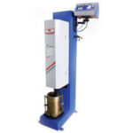
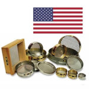
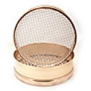

We provide comprehensive soil testing equipment for geotechnical investigation, foundation design, and construction projects. Our equipment meets international standards for soil analysis and testing procedures.

S172-01
Motorized liquid limit device, chrome cup
Standard: ASTM D4318 | AASHTO T89 | UNI 10014 comparable to: BS 1377-2 | UNE 7377
Used to evaluate the relationship between the moisture percentage of a soil sample and the number of blows required to close a groove made into the soil and therefore to determine when a clay soil changes from a plastic to a liquid state.

S165-02 KIT
Semiautomatic cone digital penetrometer
Features: Magnetic Controller Device & Electronic Digital Programmable Timer
Basically, equipped with a magnetic controller device, electronic digital programmable timer that automatically releases the plunger head and ensures free falling of the cone during the 5-seconds test. Supplied complete.

S276-01
AUTO SHEARLAB - Shear Testing Machine, with Data Acquisition System
Standard: CEN-ISO-TS 17892-10, AASHTO T235, NF P94-071-2 | BS P54-071-1, BS 1377-7, ASTM D3080-72
Test used by geotechnical engineers to measure the shear strength properties of soil or rock material, or of discontinuities in soil or rock masses.

NL 5002 X / 010
Eco Smartz Advance CBR Loading Tester 50kN
Standard: EN 13286-47, BS 1377-4, ASTM D1883, AASHTO T 193
Operate by moving platen through a mechanical gear. The apparatus come with rapid approach speed ensures rapid platen movement per hand wheel revolution designed to suit small specimen loading.

NL 5032X / 001
Electrical Density Gauge (EDG)
Standard: ASTM D7698, ASTM D1556, ASTM D2167, ASTM D698, ASTM D1557, ASTM D4564, ASTM D 2216, ASTM D 4643, ASTM D 4744, ASTM D 4959
The Electrical Density Gauge (EDG) is a nuclear-free alternative for determining the moisture and density of compacted soils used in road beds and foundations. The EDG is a portable, battery-powered instrument capable of being used anywhere without the concerns and regulations associated with nuclear safety.

NL 5025 X / 005
ECO-SMARTZ Automatic Proctor / CBR Soil Compactor
Standard: EN 13286-47 / BS 1377-4 / ASTM D698, D1557, D1883 / AASHTO T99, T108, T193
Solid and compact design allow uniform and correct compaction of Proctor and CBR sample.

USA-SS-001
USA Standard Sieves
Features: Standard Particle Size Analysis
The mechanical or sieve analysis is performed to determine the distribution of the coarser, larger-sized particles, and the hydrometer method is used to determine the distribution of the finer particles.

MFS-001
Metric Frame Sieves
Features: Metric Standard Particle Analysis
The mechanical or sieve analysis is performed to determine the distribution of the coarser, larger-sized particles, and the hydrometer method is used to determine the distribution of the finer particles.
Our Services Include:
- Supply of soil testing equipment
- Geotechnical investigation services
- Calibration and verification services
- Equipment maintenance and repair
- Technical support and training